FIRST LIGHT D02 / 007 Visual Comparison
评判两者之间有多大差距，该如何修改以达到007场景水平
Reload


Vault


Aim


TargetTrial（未保存试验）
仅将中央 D02_EnemySUV_B 的车漆槽切换为 D02 自有深色材质；车辆位置与成熟源资产均未改动。
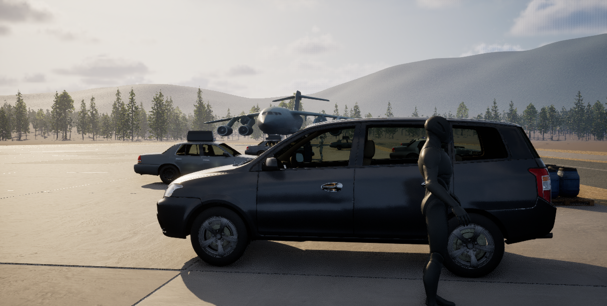
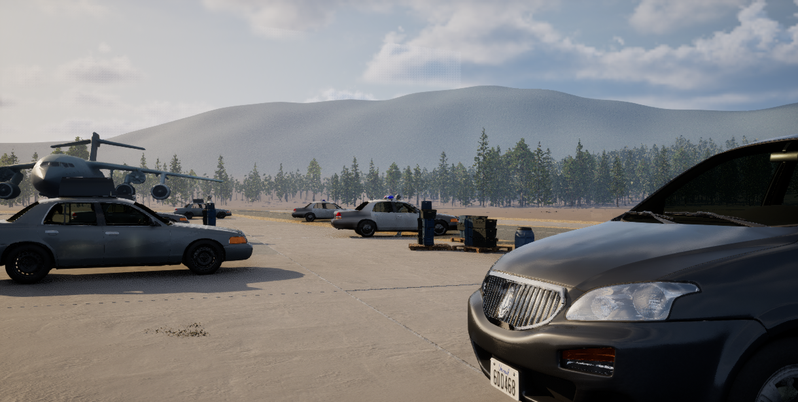
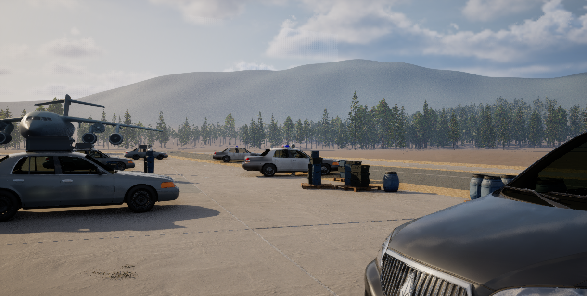
Fog 7.0 Trial（未保存试验）
仅将唯一 Ultra Dynamic Sky 的公开 Fog 参数从 4.0 调到 7.0；太阳、天光、时间、方向与全部场景 Transform 不变。
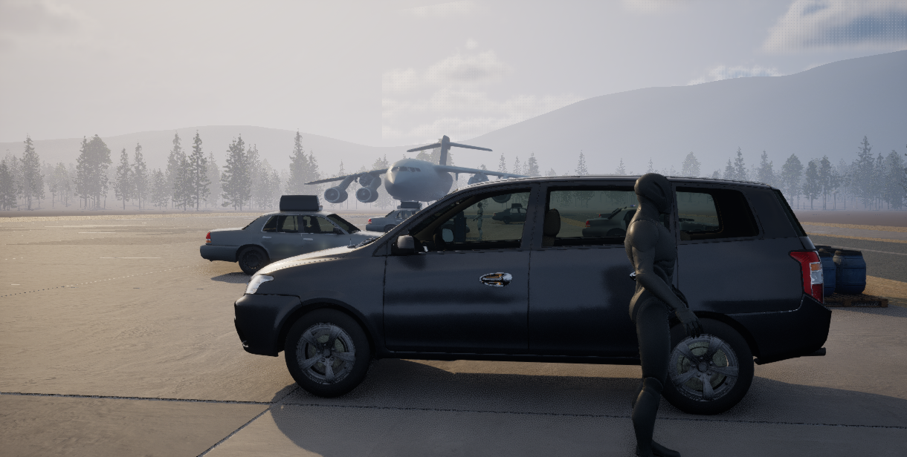
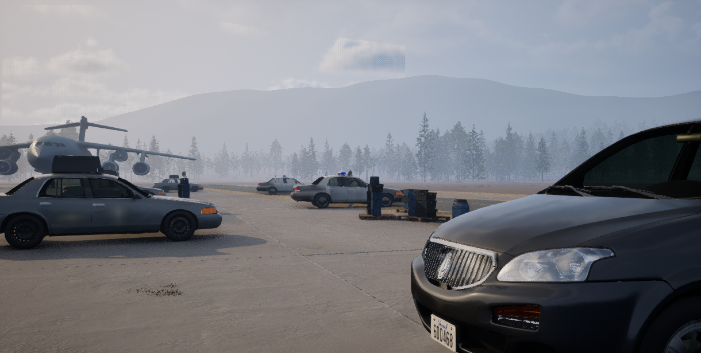
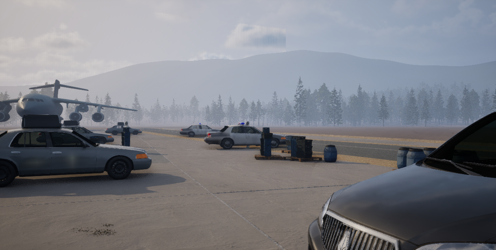
Fog 5.5 Trial（未保存最终候选）
根据 Fog 7.0 的 Vault 退化，将同一公开参数收敛到 5.5；其余 UDS 参数与全部场景 Transform 仍不变。
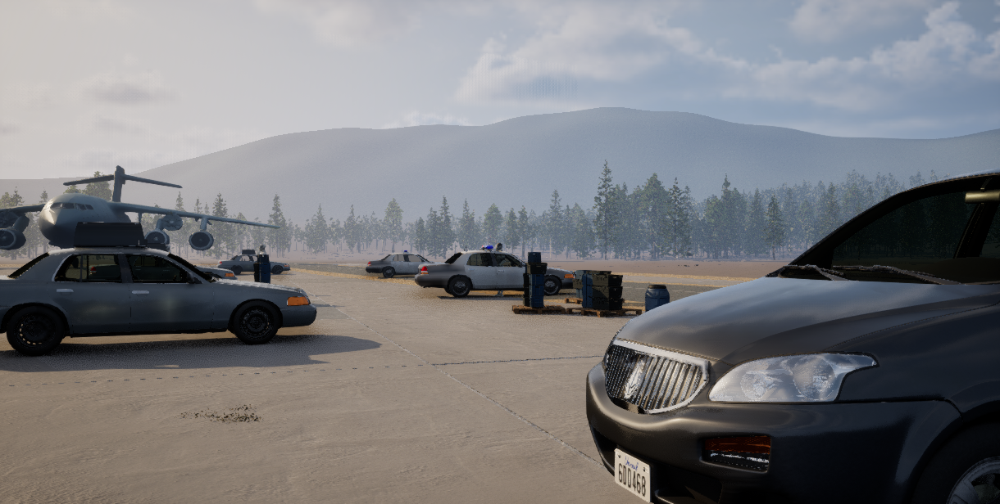
SkyLight 0.98（已通过并保存）
在已保留的 Surface + Fog 5.5 上，仅将唯一 UDS 的公开 Sky Light Intensity 从 1.15 降到 0.98；GPT Pro 三视角均保留，其他 UDS 参数和全部 Transform 不变。
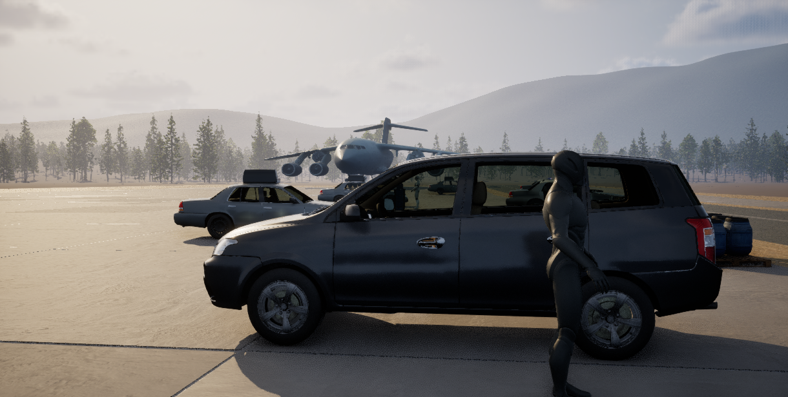
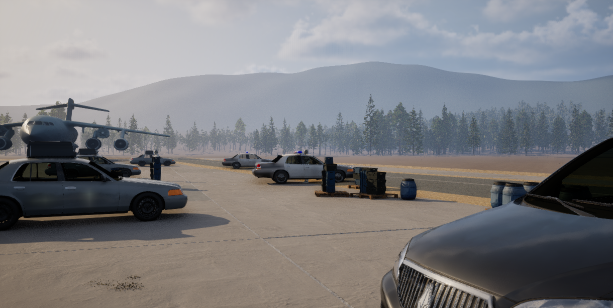
Cargo Occlusion（GPT Pro 已通过并保存）
现有 D02_CargoSecondary 完整货物组的 25 个 Actor 仅沿 Y 移动 +500 cm；GPT Pro 整体 KEEP。车辆、飞机、货物 X/Z/旋转/缩放、Landscape/Foliage 和 UDS 均不变。
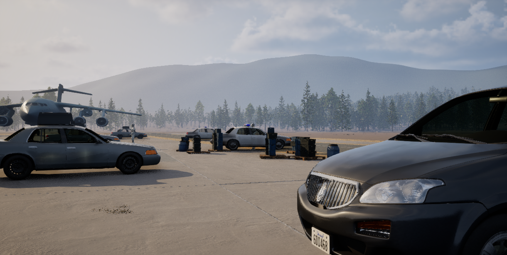
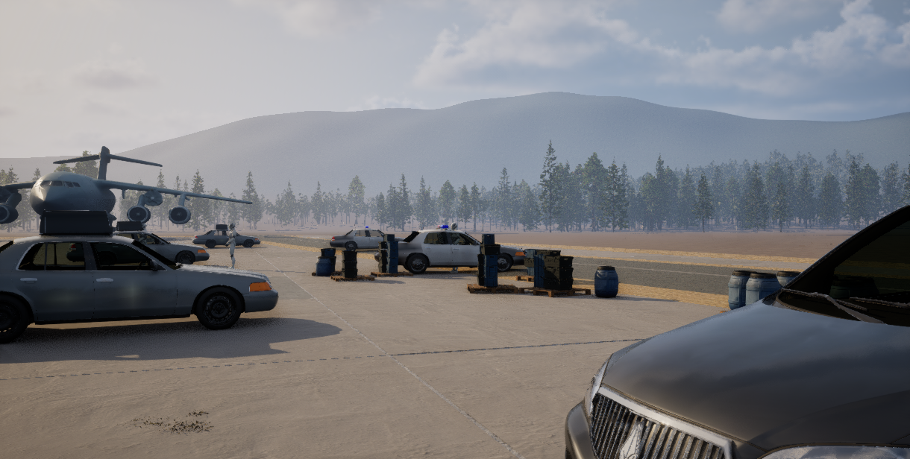